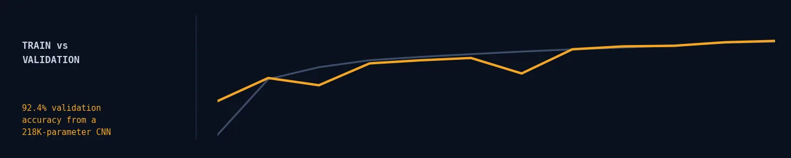
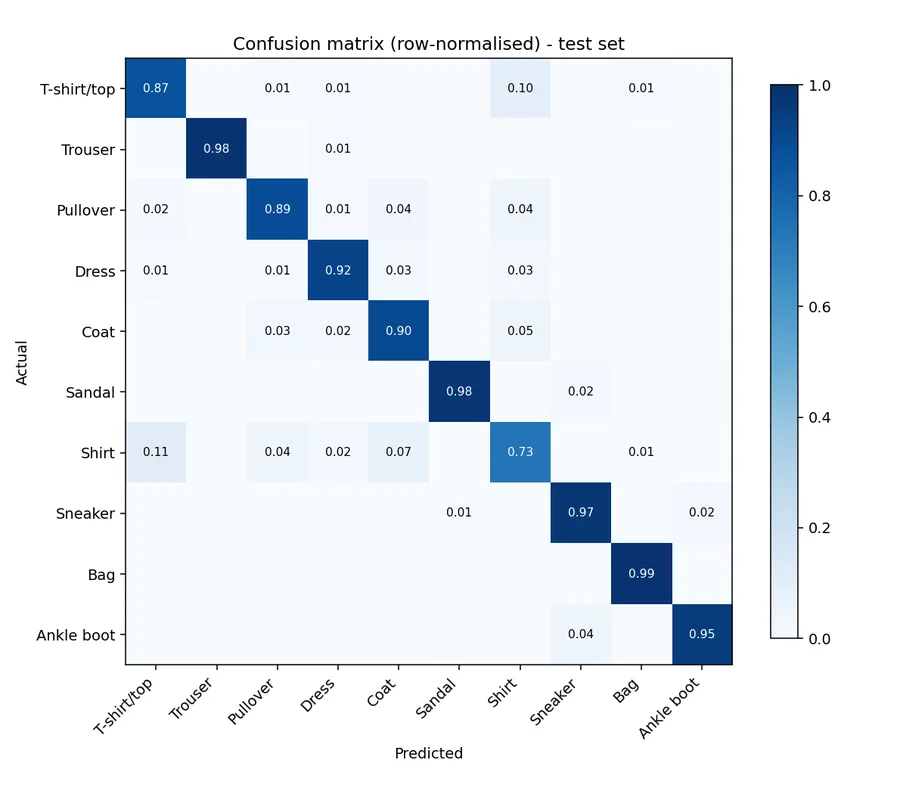
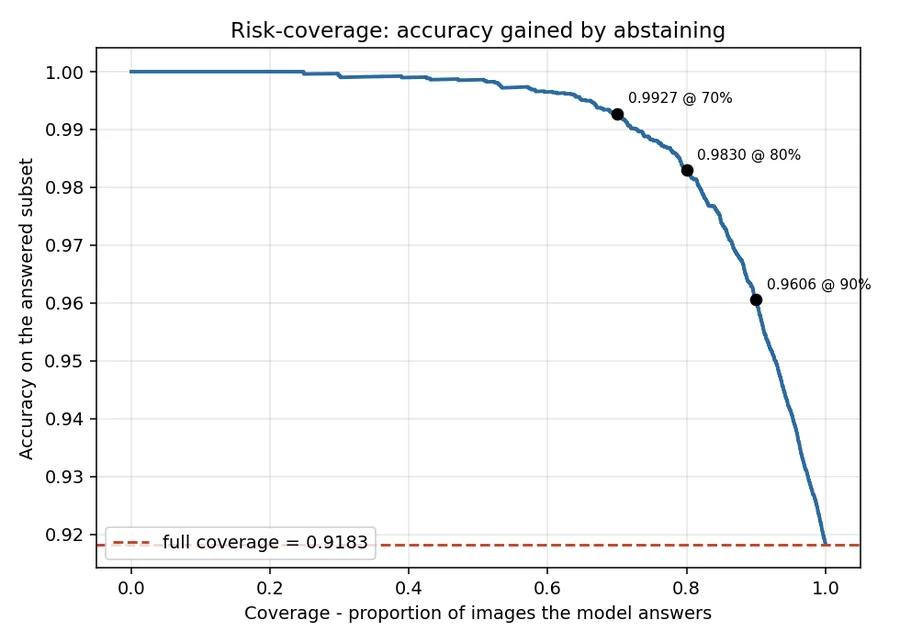

Deep learning · CPU budget · deployment
FashionMNIST Residual CNN
Deferring the least confident 10% of images lifts accuracy from 91.8% to 96.1% — for the cost of a threshold.

The constraint is the point. It forced every architectural decision to be justified by its cost, and it is a fair proxy for the edge and CPU-only environments where small vision models actually get deployed.
Validation accuracy was still climbing at epoch 12, so 91.83% is a floor rather than a ceiling — the run was stopped by the compute budget, not by convergence.
The architecture was chosen by benchmark, not by taste
Three decisions account for most of the 218K parameters and ~13M multiply-accumulates per image.
The stem runs at full resolution but only 16 channels, capturing fine detail before any downsampling at almost no cost. Both early stages downsample — convolution cost scales with spatial area, so moving to 14×14 and then 7×7 early is worth roughly a 3× speed-up over holding 28×28 through the first stage, for a fraction of a point of accuracy. This was the single change that made the project feasible: the first architecture I benchmarked would have needed 2.3 hours to train.
Global average pooling instead of a flattened dense head. A Flatten → Linear head on a 7×7×96 map would add ~470K parameters on its own — more than twice the entire network — with no accuracy gain at this scale.
The training recipe matters as much: one-cycle LR reaches competitive accuracy in ~12 epochs instead of the 40+ a step schedule needs, and augmentation is vectorised over batches in pure torch ops rather than per-image PIL transforms. On a CPU-only box the standard transforms pipeline is the bottleneck, not the model.
Aggregate accuracy hides where the errors live
Errors are not spread evenly. Four of the five most common confusions involve a single class: Shirt → T-shirt/top (113), T-shirt/top → Shirt (97), Shirt → Coat (75), Coat → Shirt (49).
Per-class F1 ranges from 0.987 (Trouser) down to 0.752 (Shirt). Every class above 0.95 is footwear or a bag; every class below 0.90 is an upper-body garment.
That is not a model defect so much as a labelling one: at 28×28 grayscale, a shirt, a t-shirt, a pullover and a coat differ mainly by sleeve length and collar detail, and those are a handful of pixels. Which is why per-class F1 and the confusion matrix are reported first.

Knowing when not to answer
Mean confidence is 0.902 on correct predictions and 0.612 on incorrect ones. The model's uncertainty is informative, so it can abstain on its weakest inputs and hand them to a human.
| Coverage | Accuracy on answered | Confidence threshold |
|---|---|---|
| 100% | 91.83% | — |
| 95% | 94.14% | 0.516 |
| 90% | 96.06% | 0.623 |
| 80% | 98.30% | 0.793 |
Deferring the least confident 10% of images lifts accuracy from 91.8% to 96.1%. For a sorting or triage application that trade is usually worth far more than another point of raw accuracy — and it costs nothing but a threshold.

Grad-CAM: right for the right reasons?
Grad-CAM weights the final 7×7 feature maps by the gradient of the predicted class score, showing which regions supplied the evidence. The overlays confirm the model attends to garment silhouette — sleeve openings, the gap between trouser legs, the shaft of a boot — rather than to background or a corner artefact.
This is also why the last stage keeps 7×7 resolution instead of downsampling to 4×4. A 4×4 heatmap upsampled to 28×28 is too coarse to tell you anything.

Verification caught two export bugs
Serving loads the TorchScript graph, not the training checkpoint. A checkpoint is a pickle that needs the model class and a compatible PyTorch version; the scripted graph carries its own definition, so the serving environment never imports training code.
Both exports are verified numerically rather than assumed correct — and that caught two real bugs.
A statically baked-in batch size. PyTorch 2.5+ routes torch.onnx.export through the dynamo exporter, which silently ignores the older dynamic_axes argument. The export succeeded and then failed at inference on any batch size other than the example's. The fix is dynamic_shapes keyed by the forward argument name. The verification deliberately uses a different batch size from the export, which is the only reason this surfaced.
A missing sidecar. The dynamo exporter writes weights to a companion .onnx.data file, leaving a 43 KB .onnx that loads fine and then fails with missing initialisers if copied alone. The exporter now folds the weights back in.
Max absolute difference against eager: 1.4e-06 for TorchScript, 1.9e-06 for ONNX.
What this does not support
- FashionMNIST is a benchmark, not a product. 28×28 grayscale, perfectly centred, one object per image, ten balanced classes — real catalogue images have none of those properties.
- 91.8% is below the published state of the art (~96% with heavy augmentation, wide-ResNets and hundreds of GPU-epochs). The gap is compute, not method, and closing it was explicitly out of scope.
- No test-time augmentation or ensembling. Both would add roughly a point for a multiple of the inference cost, undercutting the small-and-fast premise.
- The confidence analysis uses raw softmax. It ranks correctness well, but the reliability curve shows the model is over-confident in absolute terms; temperature scaling would fix the calibration without changing the ranking.